Monolayer WSe\(_2\)¶
import numpy as np
import matplotlib.pyplot as plt
import drawSvg as draw
from myst_nb import glue
def rot_mat(θ):
return np.array([[np.cos(θ), -np.sin(θ)], [np.sin(θ), np.cos(θ)]])
We base our tight binding model of monolayer WSe\(_2\) (mWSe\(_2\)) on the three band model (TBM) by Liu et al. {cite}’three_band’. In the TBM of mWSe2 the hopping is modeled using only the tungsten sites, forming a triangular lattice in the \(xy\) plane:
class LatVec:
a_1 = np.array([1, 0])
a_2 = np.array([1/2, np.sqrt(3)/2])
b_1 = 2*np.pi * np.array([1, -1/np.sqrt(3)])
b_2 = 2*np.pi * np.array([0, 2/np.sqrt(3)])
def __init__(self, i, j, reciprocal=False, scale=1):
self.i = i
self.j = j
self.scale = scale
self.reciprocal = reciprocal
self.vec = self.vectorize()
def __add__(self, other):
return LatVec(self.i+other.i, self.j+other.j)
def __eq__(self, other):
return (self.i==other.i) & (self.j==other.j)
def __and__(self, other):
return [self, other.neg(), self.neg()+other.neg(), self.neg(), other, self+other]
def __mul__(self, other):
if type(other) == LatVec:
return np.dot(self.vec, other.vec)
else:
return np.dot(self.vec, other)
def __rmul__(self, other):
return self * other
def neg(self):
return LatVec(-self.i, -self.j)
def vectorize(self):
if self.reciprocal:
return self.scale*(self.i*self.b_1 + self.j*self.b_2)
else:
return self.scale*(self.i*self.a_1 + self.j*self.a_2)
def plot(self, container, atom_radius=0.2, atom_color='darkblue', θ=0, atom="", bonds=False, **kwargs):
origin = self.vec
a_list = [self.a_1, self.a_2, self.a_1-self.a_2]
if θ != 0:
origin = rot_mat(θ) @ self.vec
a_list = [rot_mat(θ) @ a for a in a_list]
for a in a_list:
container.append(draw.Line(*(origin-a/2), *(origin+a/2), **kwargs))
gradient = draw.RadialGradient(*origin, atom_radius)
gradient.addStop(0, 'white', 1)
gradient.addStop(1, atom_color, 1)
container.append(draw.Circle(*origin, atom_radius, fill=gradient, **kwargs))
container.append(draw.Text(atom, atom_radius, *origin, text_anchor='middle', alignment_baseline="central"))
return container
container = draw.Drawing(5, 3, origin='center', displayInline=False)
for (i, j) in [(0, 0), (1, 0), (0, 1), (1, -1), (-1, 0), (0, -1), (-1, 1),
(-2, 1), (-2, 0), (-1, -1), (2, 0), (1, 1), (2, -1)]:
container = LatVec(i, j).plot(container, stroke= 'black', bonds=True, atom='W', stroke_width=0.02)
#glue('fig', container.setRenderSize(900), display=False)
container.setRenderSize(900)
![]()
class Supercell:
hop_list = LatVec(1, 0) & LatVec(0, -1)
def __init__(self, m, n):
self.v_1 = LatVec(m, n)
self.v_2 = LatVec(n+m, -m)
self.w_1 = LatVec(m, n+m, True, 1/(m**2+m*n+n**2))
self.w_2 = LatVec(n, -m, True, 1/(m**2+m*n+n**2))
r = max(m, n)
self.grid = [LatVec(i, j) for i in range(0, 3*r) for j in range(-r, r+1) if self.in_supercell(i, j)]
self.N_atoms = len(self.grid)
self.Δθ = np.arctan((n-m)/(n+m)/np.sqrt(3))
self.construct_NN_array()
def in_supercell(self, i, j, tol=10**-5):
M = np.linalg.inv(np.array([self.v_1.vec, self.v_2.vec]).T)
λ, μ = M @ LatVec(i, j).vec
in_parellogram = (tol < λ < 1-tol) and (tol < μ < 1-tol)
return in_parellogram or (i, j) == (0, 0)
def construct_NN_array(self):
self.NN_array = np.zeros((self.N_atoms, 6, 2), dtype=int)
for i in range(self.N_atoms):
self.NN_array[i, :] = [self.find_NN(i, h_vec) for h_vec in self.hop_list]
def find_NN(self, i, h_vec):
for m, lat_vec in enumerate((self.v_1 & self.v_2) + [LatVec(0, 0)]):
if self.grid[i]+h_vec+lat_vec in self.grid:
return self.grid.index(self.grid[i]+h_vec+lat_vec), m
raise Exception('No NN found for '+str(i)+' '+str(h_vec))
def interlayer_hopping_array(self, supercell, tol=10**-5):
if self.N_atoms != supercell.N_atoms:
raise Exception('Supercells have a different number of atoms')
if np.abs(self.Δθ + supercell.Δθ) > tol:
raise Exception('Unequal twist angles')
z_hopping = np.zeros((self.N_atoms, self.N_atoms, 2))
for i in range(self.N_atoms):
vec_i = supercell.grid[i].rot(-supercell.Δθ)
for j in range(self.N_atoms):
min_ΔR = 10**6
for lat_vec in (self.v_1 & self.v_2) + [LatVec(0, 0)]:
vec_j_trial = (self.grid[j]+lat_vec).rot(-self.Δθ)
if np.linalg.norm(vec_i-vec_j_trial) < min_ΔR:
min_ΔR = np.linalg.norm(vec_i-vec_j_trial)
vec_j = vec_j_trial
z_hopping[i, j] = vec_i - vec_j
return z_hopping
def plot_supercell(self, grid_points=None, *, lat_vec=LatVec(0, 0), rotate=True, **kwargs):
if grid_points == None:
grid_points = range(self.N_atoms)
grid_array = np.array([(self.grid[i]+lat_vec).rot(-self.Δθ*rotate) for i in grid_points])
plt.scatter(grid_array[:, 0], grid_array[:, 1], **kwargs)
"""n, m = 6, 7
layer_1 = Supercell(n, m)
layer_2 = Supercell(m, n)
z_hopping = layer_1.interlayer_hopping_array(layer_2)
layer_1.Δθ*2*180/np.pi
j_1 = 2
j_2 = 44
for lat_vec in [layer_1.v_1+layer_1.v_2, layer_1.v_1, layer_1.v_2, LatVec(0, 0)]:
layer_1.plot_supercell(lat_vec=lat_vec, c='green', s=10)
layer_1.plot_supercell(list(layer_1.NN_array[j_1, :]), lat_vec=lat_vec, c='blue', marker='d')
layer_1.plot_supercell([j_1], lat_vec=lat_vec, c='blue', s=70, marker='D')
layer_1.plot_supercell([j_2], lat_vec=lat_vec, c='blue', marker='D', s=70)
for lat_vec in [layer_2.v_1+layer_2.v_2, layer_2.v_1, layer_2.v_2, LatVec(0, 0)]:
layer_2.plot_supercell(lat_vec=lat_vec, c='orange', s=10)
layer_2.plot_supercell([i for i in range(layer_2.N_atoms) if np.linalg.norm(z_hopping[i, j_2]) < 1], lat_vec=lat_vec, c='red', marker='d')
plt.gca().set_aspect('equal', adjustable='box')
plt.axis('off')"""
"n, m = 6, 7\nlayer_1 = Supercell(n, m)\nlayer_2 = Supercell(m, n)\nz_hopping = layer_1.interlayer_hopping_array(layer_2)\nlayer_1.Δθ*2*180/np.pi\n\nj_1 = 2\nj_2 = 44\nfor lat_vec in [layer_1.v_1+layer_1.v_2, layer_1.v_1, layer_1.v_2, LatVec(0, 0)]:\n layer_1.plot_supercell(lat_vec=lat_vec, c='green', s=10)\n layer_1.plot_supercell(list(layer_1.NN_array[j_1, :]), lat_vec=lat_vec, c='blue', marker='d')\n layer_1.plot_supercell([j_1], lat_vec=lat_vec, c='blue', s=70, marker='D')\n layer_1.plot_supercell([j_2], lat_vec=lat_vec, c='blue', marker='D', s=70)\nfor lat_vec in [layer_2.v_1+layer_2.v_2, layer_2.v_1, layer_2.v_2, LatVec(0, 0)]:\n layer_2.plot_supercell(lat_vec=lat_vec, c='orange', s=10)\n layer_2.plot_supercell([i for i in range(layer_2.N_atoms) if np.linalg.norm(z_hopping[i, j_2]) < 1], lat_vec=lat_vec, c='red', marker='d')\n\nplt.gca().set_aspect('equal', adjustable='box')\nplt.axis('off')"
Dit was de functie:
\[
f(x) = x^2
\]
import svgwrite
dwg = svgwrite.Drawing()
link = dwg.add(dwg.a("http://link.to/internet"))
square = link.add(dwg.rect((0, 0), (1, 1), fill='blue'))
display(dwg.get_xml())
<Element 'svg' at 0x7b28071b0250>
container = draw.Drawing(6, 3, origin='center')
container.append(draw.Line(-3, 0, 3, 0, stroke='white', stroke_width='0.7'))
gradient = draw.RadialGradient(0, 0, 1)
gradient.addStop(0, 'white', 1)
gradient.addStop(1, 'darkblue', 1)
container.append(draw.Circle(0, 0, 1, fill=gradient, stroke_width=0.1, stroke='white'))
container.append(draw.Text("W", 1, 0, 0, text_anchor='middle', alignment_baseline="central"))
container.setRenderSize(200)
container

container.height = 200
container
container